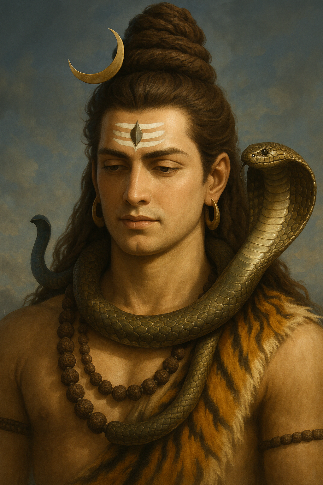
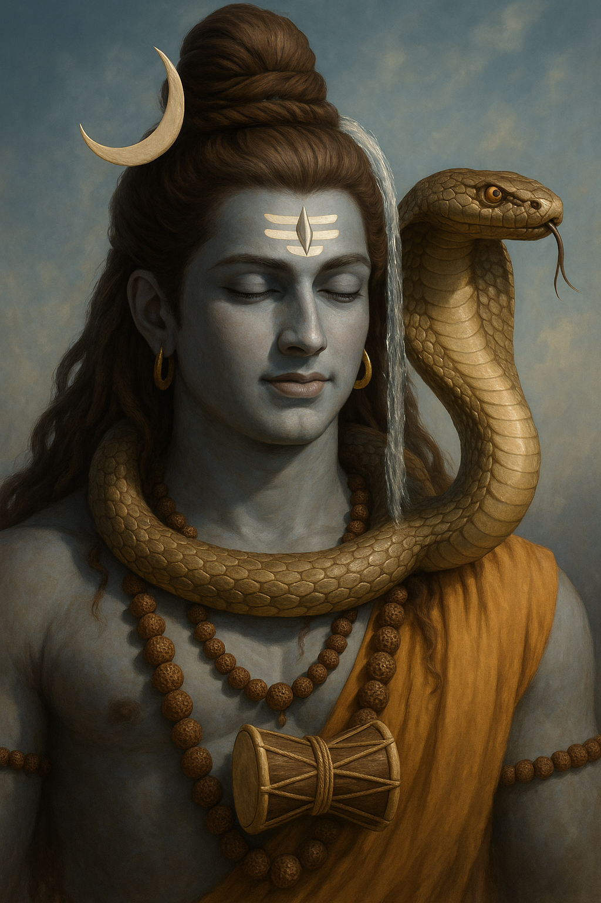

Vasuki
The Serpent King of Hindu Mythology
🐍 Who is Vasuki?
Vasuki's name means "the divine serpent" and he plays a crucial role in many Hindu myths...

Vasuki is revered as the second king of the nāgas—serpent deities in Hindu and Buddhist traditions. Known for his immense size and spiritual power, he is often depicted with multiple hoods and a jewel (Nagamani) on his head, symbolizing wisdom and divine energy. Vasuki holds a special place in Hindu iconography, most famously coiled around the neck of Lord Shiva, resting like a garland. This representation is not just symbolic of protection, but also of self-control and spiritual awakening through restraint.
🌊 Vasuki's Role in Samudra Manthan
Vasuki played a crucial role in the cosmic event known as the Samudra Manthan (Churning of the Ocean). He served as the churning rope that was wrapped around Mount Mandara, which served as the churning staff. The Devas (gods) held Vasuki's tail while the Asuras (demons) held his head, and they pulled back and forth to churn the ocean of milk.
Vasuki, the divine serpent king, coils through myth as the eternal guardian of cosmic balance.** ...

One of Vasuki’s most legendary contributions is his role in the Samudra Manthan, the churning of the ocean of milk. During this cosmic event, the devas (gods) and asuras (demons) needed a rope to churn the ocean to extract amrita (nectar of immortality). Vasuki offered himself as the churning rope, wrapping around Mount Mandara, which acted as the churning rod. Despite enduring immense strain and spewing venom during the process, his sacrifice helped restore balance to the universe, underscoring his role as a cosmic servant and protector.
🌎 Mythological Significance
Vasuki symbolizes the cosmic energy that sustains the universe. His depiction with Shiva represents the balance between consciousness (Shiva) and the primordial energy (Vasuki). In iconography, Vasuki is often shown with five or seven hoods, representing control over the five elements and the seven chakras.
Vasuki, the celestial serpent, bridges the realms of gods and demons with timeless grace....

Spiritually, Vasuki is deeply connected with kundalini energy, the coiled spiritual force said to reside at the base of the spine. In many interpretations, Vasuki represents this dormant energy, waiting to rise and activate the chakras through spiritual awakening. His multiple hoods are often seen as a metaphor for higher consciousness and mastery over the senses. In temples, Vasuki is commonly seen surrounding Shiva Lingams, reinforcing his symbolism as a guardian of the divine and a bridge between physical and metaphysical realms.